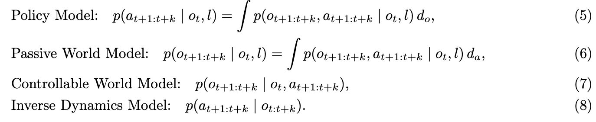

Robot Learning Notes
机器人学习里的世界模型：系列目录
原来的长文已经拆成 8 篇短博客。每篇围绕一个主题，保留 Notion 图，并补上代码视角、实现重点和 insight。
阅读顺序
总判断
这组笔记最后收敛到一个问题：机器人需要的未来，不一定是一段高清视频，而是一种足够动作相关、 足够快、足够稳定的预测表示。显式视频预测适合解释和规划，潜空间预测更接近高频控制， condition-space 路线则试图把未来直接变成动作生成的条件。

Robot Learning Notes
原来的长文已经拆成 8 篇短博客。每篇围绕一个主题，保留 Notion 图，并补上代码视角、实现重点和 insight。
这组笔记最后收敛到一个问题：机器人需要的未来，不一定是一段高清视频，而是一种足够动作相关、 足够快、足够稳定的预测表示。显式视频预测适合解释和规划，潜空间预测更接近高频控制， condition-space 路线则试图把未来直接变成动作生成的条件。
